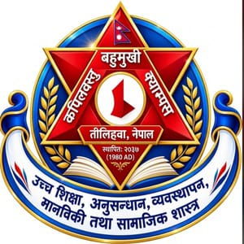
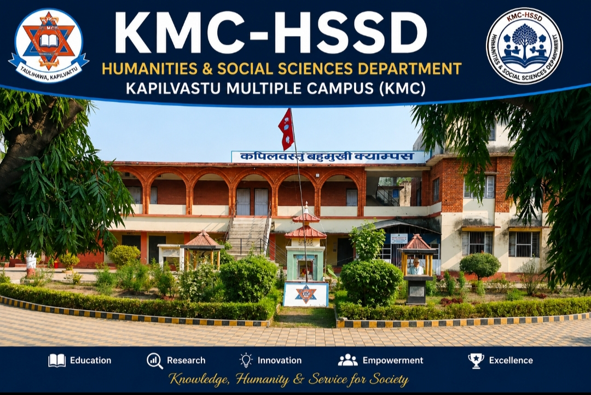

Taulihawa, Kapilvastu, Lumbini Province, Nepal
Theme:
"Learn • Research • Innovate • Collaborate • Create Impact"
www.kmc.edu.np | https://fohss.tu.edu.np/
The 2027/28 Academic Calendar is organized around five core pillars that define the educational mission of KMC-HSSD:
Build comprehensive knowledge through critical reading, classroom engagement, interdisciplinary learning, and digital literacy.
Generate evidence-based understanding through structured research development, problem identification, literature review, data collection, and rigorous academic writing.
Create new possibilities using AI-assisted learning, digital humanities, creative problem-solving, technology integration, and entrepreneurial thinking.
Connect people and ideas through faculty-student partnerships, peer learning, community engagement, interdepartmental initiatives, and alumni networks.
Transform knowledge into social value through community service, research dissemination, heritage preservation, sustainable development, and evidence-based social transformation.
This calendar covers the following programs offered at Kapilvastu Multiple Campus under Tribhuvan University:
KMC-HSSD offers Bachelor of Arts programs in the following disciplines:
[Additional programs will be included as they are officially approved by KMC and Tribhuvan University]
Complete academic calendar with both A.D. and B.S. dates:
| ACADEMIC EVENT | A.D. DATE | B.S. DATE | RESPONSIBLE UNIT |
|---|---|---|---|
| Classes Begin (TU notification) | September 18, 2027 | Ashwin 2, 2084 | Academic Dean |
| Dashain Break | October 17-23, 2027 | Ashwin 31 – Kartik 6, 2084 | Campus Admin |
| Mid-Term Internal Tests | November 18-28, 2027 | Kartik 2-12, 2084 | Exam Coordinator |
| Tihar Break | November 8-12, 2027 | Kartik 22-26, 2084 | Campus Admin |
| Research Proposals Due | December 31, 2027 | Poush 15, 2084 | Research Coordinator |
| Exam Form Submission (100%) | March 25, 2028 | Falgun 11, 2085 | Exam Coordinator |
| Classes End | May 15, 2028 | Jestha 1, 2085 | Academic Dean |
| TU Final Examinations Begin | June 10, 2028 | Ashadh 2085 | Controller Exams |
| Results Published | September 2028 | Ashwin 2085 | Exam Coordinator |
⚠️ Note: Dates marked "TU notification" are provisional and subject to official notification from Tribhuvan University Office of the Controller of Examinations.
All B.A. students engage in structured research as 15% of their final grade. The research cycle integrates 8 key milestones and 5 research forms.
| MILESTONE | PHASE | TIMELINE | DELIVERABLE |
|---|---|---|---|
| 1. Interest Exploration | Interest Identification | Sep 18 - Oct 5, 2027 | Interest Sheet (1 page) |
| 2. Topic Finalization | Problem Identification | Oct 6-20, 2027 | Topic Proposal (½ page) |
| 3. Literature Review | Annotation & Analysis | Oct 21 - Nov 15, 2027 | Annotated Bibliography (15-20 sources) |
| 4. Methodology Training | Methods & Ethics | Nov 5-15, 2027 | Ethics Agreement + Quiz |
| 5. Proposal Development | Full Proposal Writing | Nov 16 - Dec 31, 2027 | Research Proposal (3-5 pages) |
| 6. Data Collection | Fieldwork & Surveys | Jan 1 - Feb 28, 2028 | Monthly Progress Reports |
| 7. Data Analysis & Writing | Processing & Draft | Feb 1-28, 2028 | Analysis Report (10-15 pages) |
| 8. Presentation & Seminar | Public Sharing | Mar 1-30, 2028 | Slides + Handout + Feedback Form |
The Department embraces responsible, ethical use of Artificial Intelligence and digital tools to enhance teaching, research, and student development.
| TOOL CATEGORY | TOOLS | APPLICATION |
|---|---|---|
| Literature Discovery | Zotero, Mendeley, Google Scholar | Reference management, citation organization, source discovery |
| Reference Management | Zotero, Mendeley, EndNote | Bibliography creation, source organization, citation automation |
| Qualitative Analysis | NVivo, ATLAS.ti, MAXQDA | Thematic coding, text analysis, qualitative data organization |
| Quantitative Analysis | SPSS, Jamovi, R, Python | Statistical analysis, data visualization, hypothesis testing |
| Data Visualization | Power BI, Tableau, Python (Matplotlib, Seaborn) | Research findings communication, infographics, interactive dashboards |
| Generative AI | ChatGPT, Claude, Gemini | Brainstorming, literature synthesis, writing support, idea development |
| Digital Humanities | QGIS, mapping tools, digital archives, transcription tools | Spatial analysis, cultural documentation, heritage preservation |
| Writing Support | Grammarly, Turnitin, AI-assisted editing tools | Grammar check, plagiarism detection, style improvement |
⚠️ Important: All students will receive orientation on appropriate and ethical use of AI tools during the academic year. Faculty will model responsible AI use in teaching and research.
KMC-HSSD proposes 13 seminars and workshops to develop student competencies across academic, digital, and professional domains:
| NO. | WORKSHOP/SEMINAR | PROPOSED MONTH | TARGET AUDIENCE |
|---|---|---|---|
| 1 | Research Methodology & SMART Research Design | October 2027 | All B.A. Years |
| 2 | Academic Writing & Citation Standards | October 2027 | All B.A. Years |
| 3 | AI Literacy for Humanities: Ethics, Tools, Best Practices | November 2027 | All B.A. Years |
| 4 | Zotero Reference Management & Bibliography | November 2027 | All B.A. Years |
| 5 | Qualitative Data Analysis (NVivo/ATLAS.ti) | December 2027 | 2nd & 3rd Year |
| 6 | Quantitative Analysis: SPSS & Jamovi Basics | December 2027 | 2nd & 3rd Year |
| 7 | Research Ethics & Informed Consent | November 2027 | All B.A. Years |
| 8 | Career Development & Professional Communication | January 2028 | Final Year |
| 9 | Entrepreneurship & Social Innovation | February 2028 | All B.A. Years |
| 10 | Digital Literacy & Information Security | September 2027 | 1st Year |
| 11 | Critical Thinking & Debate Skills | October 2027 | All B.A. Years |
| 12 | Community Engagement & Social Responsibility | March 2028 | All B.A. Years |
| 13 | Heritage Preservation & Digital Humanities | April 2028 | All B.A. Years |
[Status: Proposed — Subject to resource availability and speaker confirmation]
The Department is committed to community engagement as a core component of student learning and social responsibility.
| ACTIVITY | TIMELINE | DESCRIPTION | TARGET AREA |
|---|---|---|---|
| Community Survey 2027 | September 2027 | Baseline survey of community needs and local challenges | Kapilvastu District |
| Heritage Documentation Project | Oct 2027 - Mar 2028 | Document local history, Tilaurakot archaeology, Buddhist heritage | Tilaurakot & Heritage Sites |
| Digital Literacy Campaign | November 2027 | Teach digital skills to community members | Taulihawa & Villages |
| Social Awareness Program | December 2027 | Public awareness on education, health, environment | Kapilvastu Community |
| Local Knowledge Documentation | January - February 2028 | Record oral histories, indigenous knowledge, cultural practices | Kapilvastu District |
| Community Development Project | February - April 2028 | Student-led projects addressing local problems | Kapilvastu District |
| Educational Outreach Program | March 2028 | Mentoring local students, school support activities | Local Schools |
| Research Dissemination Seminar | April 2028 | Share student research findings with community | KMC Campus |
Kapilvastu holds immense historical, cultural, and spiritual significance in Nepali history. The Department integrates local heritage into academic learning and research:
| MONTH | ACTIVITY | PROGRAM FOCUS |
|---|---|---|
| September | Tilaurakot Site Visit & Orientation | History & Culture, Sociology |
| October | Buddhist Heritage Workshop | All Humanities Programs |
| November | Oral History Collection Project | Mass Communication, History |
| December | Heritage Site Photography & Archiving | Mass Communication, Rural Dev |
| Jan-Feb | Community Knowledge Research | Sociology, Rural Development |
| March | Heritage Awareness Campaign | Mass Communication, English |
| April | Heritage Preservation Seminar | All Programs |
The Department uses Key Performance Indicators (KPIs) to monitor academic quality and institutional effectiveness:
| KPI | TARGET | MONITORING PERIOD | RESPONSIBLE UNIT |
|---|---|---|---|
| Class Completion | 100% of planned classes | Monthly | Faculty & Department |
| Student Attendance | ≥ 90% | Ongoing | Subject Teachers |
| Assignment Completion | ≥ 90% | Each Assessment Cycle | Faculty |
| Mid-Term Pass Rate | ≥ 85% (≥40/100) | December 2027 | Exam Coordinator |
| Research Participation | 100% of students engaged | Ongoing | Research Coordinator |
| Exam Form Submission | 100% of students | March 25, 2028 | Exam Coordinator |
| Student Satisfaction | ≥ 3.7/5 rating | Annual (May 2028) | Department |
| Workshops/Seminars Delivered | ≥ 12 programs | Annual | Department |
Clear assignment of responsibilities ensures effective implementation of the academic calendar:
| RESPONSIBLE UNIT | KEY FUNCTIONS |
|---|---|
| Campus Administration | Holiday management, facility logistics, institutional calendar alignment |
| Department Head | Overall academic planning, faculty coordination, departmental strategy |
| Program Coordinators | Program-specific planning, curriculum delivery, student support |
| Subject Teachers | Classroom teaching, assignment management, student assessment |
| Research Coordinator | Research milestone management, form submission, methodology training |
| Examination Coordinator | Exam form collection, internal assessment, TU coordination |
| Quality Assurance Unit | Course evaluation, student feedback, institutional review |
| IT/ICT Unit | Digital learning platform, LMS management, AI tool support |
| Library & Learning Resources | Research resource support, digital literacy, reference management |
| Student Representative | Student voice, feedback collection, peer support |
At the end of academic year 2027/28, the Department will conduct a comprehensive annual review following a cyclical improvement process:
| PHASE | ACTIVITIES | TIMELINE |
|---|---|---|
| PLAN | Academic calendar development, target setting, resource planning, strategy formulation | May - August |
| IMPLEMENT | Execute all planned activities, teaching, research, events, community engagement | September 2027 - May 2028 |
| MONITOR | Track progress using KPIs, monthly reports, feedback collection, progress tracking | Ongoing (Monthly) |
| EVALUATE | Analyze results, conduct surveys, assess outcomes, review achievements | May - June 2028 |
| IMPROVE | Identify gaps, plan improvements, adjust strategies, prepare for next year | June - August 2028 |
The Annual Academic Review Report (September 2028) will document achievements, challenges, and recommendations for the 2028/29 academic year.
| OFFICE | CONTACT/NAME | PHONE/EMAIL |
|---|---|---|
| Department Head, KMC-HSSD | Mr. Bishnu Singh Rayamajhi | +977-9805445683 bbsrm4591@gmail |
| KMC Campus Chief (Administration) | Mr. Hotaraj Khanal | +977-9857051169 kmckpl@gmail.com |
| KMC Research Coordinator | Mr. Giriraj Pokhrel | +977-9847040662 kmckpl@gmail.com |
| Examination Coordinator | [Name] | [Contact Number] [Email] |
| Library & Learning Resources | [Name] | [Contact Number] [Email] |
| ICT/Digital Learning Unit | [Name] | [Contact Number] [Email] |
| TU Office of Controller of Exams | Tribhuvan University | examcontroller@tu.edu.np |
| FoHSS Website | Tribhuvan University | https://fohss.tu.edu.np/ |
This Academic Calendar is prepared with reference to the following official sources:
IMPORTANT NOTE ON DATES AND OFFICIAL NOTIFICATIONS:
This Academic Calendar is a departmental planning document prepared for the Department of Humanities and Social Sciences (KMC-HSSD), Kapilvastu Multiple Campus, Tribhuvan University.
Official admission, examination, academic-session, public-holiday, and other university-level dates shall remain subject to the latest notifications issued by:
Any proposed or tentative date in this calendar shall be revised immediately when an official notification is issued by any of the above authorities.
Prepared by: KMC-HSSD Academic Planning Committee
Department Head: Mr. Bishnu Singh Rayamajhi
Date of Preparation: September 2026
Next Review Date: June 2028